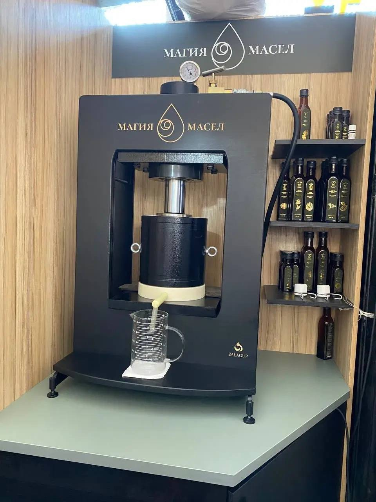

Краткий ответ: почему капролон превосходит дуб за 10 секунд
«Дубовая бочка» для масла — популярный маркетинговый стереотип из интернета. В реальности дуб — это пористый древесный материал с капиллярами диаметром до 400 мкм. При гидравлическом давлении в сотни атмосфер масло впрессовывается в поры дерева, окисляется кислородом воздуха и неизбежно прогоркает, заражая горечью последующие отжимы. Профессиональное оборудование SALAGUP использует сертифицированный пищевой капролон (полиамид-6), впрессованный в толстостенную стальную гильзу. Капролон абсолютно монолитен, химически инертен, не имеет микропор, держит усилие 50–100 тонн (по данным производителя оборудования) и обеспечивает 100% изоляцию от стали. А герметичный закрытый капельник с силиконовой трубкой полностью исключает контакт свежего масла с воздухом и пылью.

Реальное оборудование «Магии Масел» на Центральном рынке Калининграда: профессиональный гидропресс SALAGUP на прилавке мастерской. Белый пищевой капролон в толстостенной стальной гильзе, манометр высокого давления и закрытый капельник прямо в мерный стакан.
1. Маркетинговый миф о «дубовой бочке»: откуда он взялся
Если вбить в поисковике «сыродавленное масло прямого отжима», в 9 из 10 статей вы прочитаете пасторальный рассказ: «мы бережно отжимаем семена в дубовой бочке, стянутой железными обручами, по старинным дедовским рецептам».
Этот образ отлично продаёт романтику: в воображении покупателя возникает образ экологичной деревни, благородного дуба и натуральности. Но мало кто задумывается о том, как устроена физика процессов, когда на органический материал давит гидравлический шток с усилием в 30–50 тонн (по данным производителя пресса).
В виноделии дубовая бочка уместна: танины древесины медленно переходят в спиртовой раствор, обогащая букет вина. Но в маслоделии законы химии принципиально иные. Растительное масло состоит из уязвимых полиненасыщенных жирных кислот. Контакт с пористой органикой для них — прямой путь к окислительной порче.
2. Биохимия пор дерева: почему в дубовом бочонке масло начинает горчить
Главный враг сыродавленного масла — кислород и окисленные свободные радикалы. Посмотрим на дуб под микроскопом:
- Капиллярная пористость: дуб пронизан микрососудами и сердцевинными лучами диаметром от 100 до 400 микрометров.
- Впрессовывание жиров: когда пресс развивает давление в 300–500 атмосфер, микрочастицы масла вдавливаются глубоко в структуру древесных волокон. Ни один льняной мешок не способен создать герметичный барьер для жидких триглицеридов.
- Невозможность промывки: дерево нельзя прокипятить или обработать дезинфицирующими растворами без разрушения структуры древесины. Вода внутрь пор с маслом не проникает.
- Реакция автоокисления: остатки масла предыдущего отжима остаются в толще дерева. При контакте с воздухом нестабильные Омега-3 и Омега-6 кислоты распадаются на первичные продукты окисления, гидропероксиды, альдегиды и кетоны.
Химический маркер перекрёстного загрязнения
Если в дубовом бочонке сначала отжать пряный чёрный тмин, а затем засыпать нежный золотистый лён — льняное масло впитает не только чужой смолистый запах, но и микродозы окислившихся тминных смол из пор дерева. В результате покупатель получает свежее по дате масло, которое уже на старте имеет горький, испорченный привкус.
Кроме того, у дуба есть физический предел прочности на радиальный разрыв. Деревянный бочонок трескается и расходится по клепкам уже при усилии 30–35 тонн. А это значит, что на дубе физически невозможно качественно отжать твёрдые мелкосемянные культуры: амарант, шиповник, чёрный тмин и виноградную косточку.
3. Что такое пищевой капролон: физика материала и стальная гильза
Чтобы исключить дефекты дерева, современная пищевая инженерия перешла на конструкционный полимер — капролон блочный (полиамид-6 / PA-6 / Ertacetal).
Ключевые свойства пищевого капролона:
- Монолитная структура: у капролона нулевая капиллярная пористость. Поверхность обрабатывается на токарных станках с ЧПУ до зеркальной гладкости. Маслу негде задерживаться и не во что впитываться.
- Полная химическая инертность: не вступает в реакции с жирными кислотами, эфирными маслами и органическими кислотами семян. Имеет официальный санитарно-гигиенический допуск по СанПиН и ТР ТС 005/2011.
- Гигиена и санитария: бочонок промывается горячей водой между разными партиями. Запахи и вкусы не смешиваются. После отжима тмина можно сразу жать деликатный кедр или кунжут — вкус будет чистейшим.
Зачем нужна стальная гильза пресса SALAGUP?
Сам по себе капролон — упругий пластик. При гидравлическом давлении в 50–100 тонн капролоновую бочку просто раздуло бы в боках, а поршень заклинило.
Инженер Виктор Салагуп (создатель прессов SALAGUP MASLO) разработал комбинированную конструкцию:
- Внутренняя рабочая втулка вытачивается из толстого массива белого пищевого капролона.
- Капролоновый цилиндр под прессом намертво запрессовывается в толстостенную внешнюю стальную гильзу.
- Стальная гильза берёт на себя чудовищный радиальный распирающий вектор давления (до сотен атмосфер), а капролон надёжно изолирует сырьё и масло от контакта с металлом.
Внутрь капролона закладывается специальный полиамидный мешок с круглым дном, раскроенный лазером (лазерная резка оплавляет край волокон, исключая появление нитей в масле, а 4 армированных шва выдерживают пиковое давление).
4. Закрытый капельник против открытого лотка: защита от кислорода и пыли
Второй критический узел, о котором забывают кустарные производители, — это зона выхода масла из пресса.
В 90% примитивных маслопрессов масло вытекает через отверстие в деревянном донце и струйкой падает в подставленную открытую миску или желоб. Что происходит в этот момент:
- Аэрация: падающая с высоты струя активно перемешивается с комнатным воздухом. Кислород мгновенно растворяется в тонкой масляной плёнке, запуская первичное окисление ещё до попадания в тару.
- Взвешенная пыль: на любом рынке или в торговом зале в воздухе витают микрочастицы пыли, пыльцы и спор, которые оседают в открытую емкость с маслом.
Инженерное решение SALAGUP: герметичный закрытый капельник
В прессах «Магии Масел» реализована закрытая система слива. На нижнее капролоновое донце бочонка установлен герметичный штуцер на пищевых уплотнителях. К нему подсоединена гибкая прозрачная силиконовая трубка, которая опускается прямо на дно мерного сосуда.
Масло выходит из зоны высокого давления в бескислородную закрытую магистраль. Контакт с окружающим воздухом и рыночной пылью сведён к абсолютному нулю.
5. Сравнительная матрица: Шнековый завод vs Дубовая бочка vs Капролон в гильзе
| Параметр | Шнековый пресс (завод) | Дубовый бочонок (кустарный) | Капролон в гильзе SALAGUP |
|---|---|---|---|
| Температура отжима | 75–95°C (нагрев от трения) | 20–24°C (комнатная) | 20–22°C (комнатная) |
| Контакт с металлом | 100% (трение о стальной винт) | 0% (дерево) | 0% (полиамид + капролон) |
| Пористость и микробы | Отсутствуют (стерилизация теплом) | Высокая (капилляры 100–400 мкм) | Нулевая (монолитный полимер) |
| Прогоркание остатков | Масло фильтруется химией | Жиры окисляются в порах дуба | Исключено (легко моется кипятком) |
| Контакт с воздухом/пылью | Закрытые промышленные трубы | Открытый лоток и капельница | Закрытый силиконовый капельник |
| Максимальное давление | Высокое (за счёт истирания) | Ограничено (до 25–30 тонн) | До 50–100 тонн (в стальной гильзе) |
| Сложные семена (амарант, тмин) | Жмутся с перегревом | Не выжимаются (бочка треснет) | Полный отжим в холодном режиме |
6. Чек-лист покупателя: 5 вопросов мастеру у прилавка
Когда вы приходите на ярмарку или рынок покупать крафтовое масло, не верьте на слово рекламным лозунгам. Задайте продавцу 5 конкретных технологических вопросов:
- «Покажите бочонок, в котором давите масло прямо сейчас». Если вам показывают потемневшую от времени промасленную деревянную кадку — знайте, что в порах этого дерева живут окисленные перекиси всех масел, которые жали до вас.
- «Из какого материала сделана рабочая камера?» Правильный ответ: сертифицированный пищевой полиамид (капролон) с зеркальной полировкой.
- «Как моется оборудование между тмином и льном?» Дуб вымыть невозможно. Капролон промывается горячей водой с нейтральным пищевым раствором за 3 минуты.
- «Куда капает масло при отжиме?» Если масло течет по открытому деревянному лотку на воздухе — оно уже начало окисляться и собирать пыль. Если стоит закрытый герметичный штуцер с силиконовой трубкой в мерный стакан — перед вами профессионал.
- «Дайте попробовать из ложки перед покупкой». Свежее масло из капролонового пресса имеет чистый, сладковато-ореховый нативный вкус без жжения и технической горечи.
7. Частые вопросы об оборудовании холодного отжима (FAQ)
Почему капролон белого цвета? Это не краска?
Первичный конструкционный пищевой капролон марки «А» имеет естественный молочно-белый или полупрозрачный оттенок без красителей и пластификаторов. Он не окрашивается масличными пигментами (даже тёмно-зелёным хлорофиллом семян тыквы) и легко отмывается до исходного состояния.
А как же контакт масла с силиконовой трубкой капельника?
В узле капельника используется медицинский платиновый силикон (силикон пищевого стандарта FDA / ГОСТ). Он полностью инертен к растительным липидам, не содержит фталатов и бисфенола А и сохраняет эластичность при любых температурах.
Можно ли дома отличить масло из капролона от масла из дуба?
Да, по органолептике. Масло из капролона имеет тонкий, моносортовой аромат конкретного семени (лён пахнет свежим семенем, кедр — тайгой). Масло из старого дубового бочонка всегда имеет посторонний «сундучный» древесный оттенок и фоновую горечь окислившихся жиров.
Посмотрите на работу пресса своими глазами
Приходите на Центральный рынок Калининграда. Наш гидравлический комплекс SALAGUP стоит прямо на прилавке: покажем капролоновый бочонок, мерный стакан и нальём ложку живого масла прямо из-под пресса.